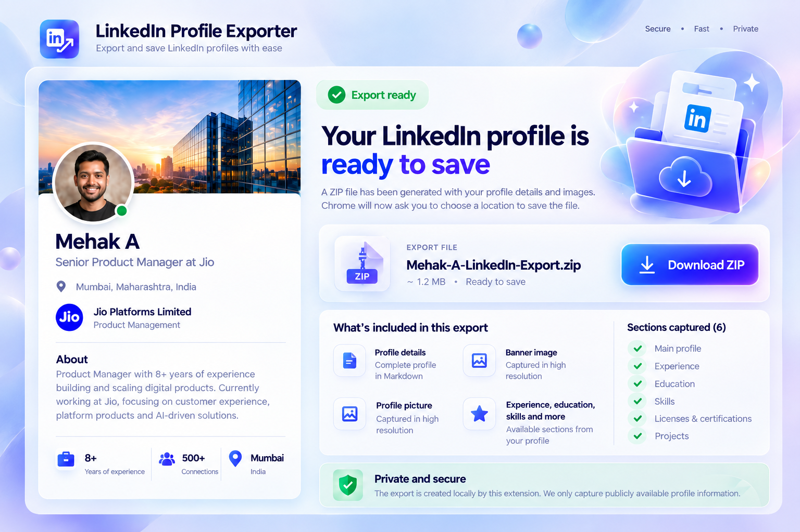

1
Open the profile
Start from a LinkedIn profile you can already access in your browser.

Turn the LinkedIn profile open in Chrome into a clean local package with structured Markdown and available profile images. Keep it as a backup or upload it to ChatGPT, Claude or your own tools when you choose.
No telemetry · No application backend · User-triggered download

The extension handles the repetitive collection work. You decide what to do with the exported file afterwards.
Start from a LinkedIn profile you can already access in your browser.
The extension captures the main profile and supported optional sections, skipping data that is not present.
Review the dedicated export window, then click Download ZIP to save the Markdown and available images locally.
LinkedIn Profile Exporter does not call an AI service. It gives you cleaner source material so you can provide context deliberately.
Profile parsing, Markdown generation, image conversion and ZIP creation happen inside the browser extension. The project does not include analytics, telemetry or an application backend. The ZIP download starts only after you click Download ZIP.
If you later upload the export to an AI service, that service's own privacy and data-use terms apply.
Yes. The generated ZIP contains a Markdown profile plus the profile picture and banner when those images are available.
No. The extension creates a local export only. You choose whether to upload that file to another service.
No. It exports the profile currently open and accessible in the user's browser. It does not provide bulk crawling, login automation or access-control bypassing.
Supported sections are optional. Missing sections are skipped so the extension can continue with the information actually available.